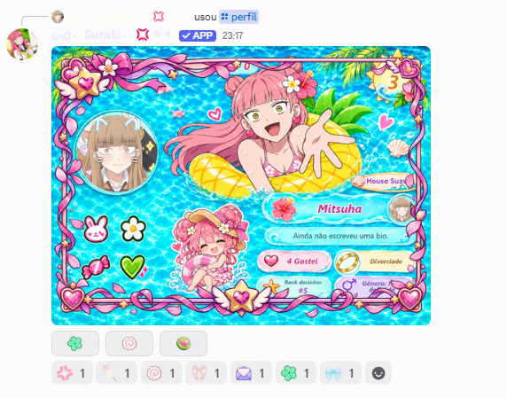
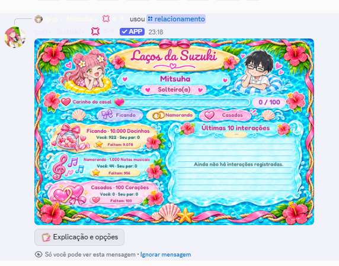
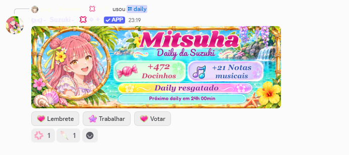
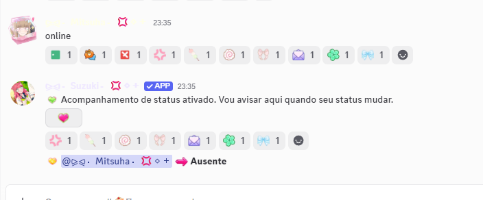

Exemplos dos recursos da Suzuki
Estas capturas mostram exemplos de recursos que usam informações dos membros e do servidor para personalizar a experiência da comunidade.
Boas-vindas
Card exibido quando um membro entra no servidor, com nome, avatar e tempo no Discord.
Perfil
Perfil com nome, avatar, nível e informações de atividade no bot.
Relacionamento
Card social com membros, etapa do relacionamento e interações registradas pelo recurso.
Recompensa diária
Exemplo de recompensa virtual registrada na conta do membro.
Acompanhamento de status
Exemplo em que o membro ativa avisos e a Suzuki identifica a mudança de presença para Ausente.